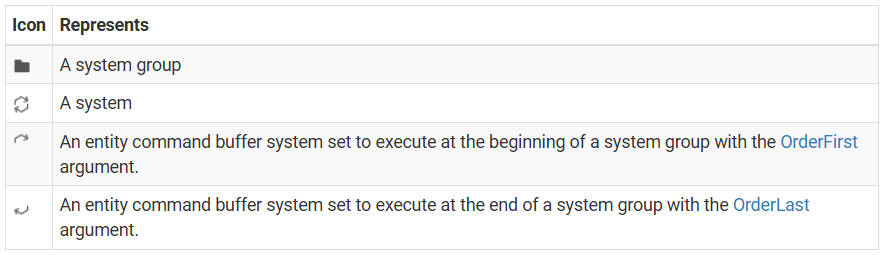

ECS
Table of Contents
ECS note.
<!– more –>
Unity ECS
Get Started: ECS workflow tutorial
Install ECS
安装如下 packages
com.unity.entities
com.unity.entities.graphics
为了让 ECS 项目在 Editor 下性能最佳，进行如下设置：
Edit > Project Settings > Editor 处 Enter Play Mode Settings 设置为 Do not reload Domain or Scene
Understand the ECS workflow
使用 Unity 的 ECS 框架创建应用程序的工作流程在原理和实现上都与创建面向对象的 Unity 应用程序的工作流程不同。在开始使用该框架创建项目之前，理解 ECS 工作流程是很有帮助的。
Create a subscene
ECS 使用子场景来包含应用程序的内容。你可以将游戏对象（GameObjects）和 MonoBehaviour 组件添加到子场景中，bakers 会将这些游戏对象和 MonoBehaviour 组件转换为 entities 和 ECS components。
Create ECS components
ECS components 存储应用程序的数据。为了在应用程序中创建行为，systems 提供了读取和写入 ECS components 数据的逻辑。ECS 工作流程是面向数据的，因此在开发系统或创建任何 Entities 之前，规划数据布局并创建 ECS components 是一个好习惯。
不同类型的 ECS components 具有不同的用途。有关更多信息，请参阅 Component types。
Create entities
Entities 代表应用程序中存在的不同事物。要在编辑器中创建 Entities，你可以将 GameObjects 添加到子场景中。烘焙过程会将这些 GameObjects 转换为 Entities。可选地，为了将 ECS components 附加到转换后的 Entities 上，你可以创建 bakers。当你创建 baker 时，你需要定义它所针对的 MonoBehaviour 组件，然后编写代码，使用 MonoBehaviour 组件数据来创建并将 ECS components 附加到转换后的 Entities 上。你也可以从 baker 中创建额外的 Entities 并将 ECS components 附加到它们上。在这个工作流程中，MonoBehaviour 组件被称为创作组件（authoring component）。
提示：
将 Authoring 添加到你创建的任何 authoring component 的类名中是一个良好的组织习惯。
你也可以在运行时创建 Entities。下面的 spawner example 代码示例展示了如何设置一个在运行时实例化 Entities 的 spawner system。
Create systems
Systems 在你的应用程序中创建行为。为此，它们可以查询和转换 ECS components 数据，创建和销毁 Entities，并从 Entities 中添加和移除 ECS components。默认情况下，当你创建一个 system 时，Unity 会实例化它并将其添加到默认世界中。
不同类型的 system 具有不同的用途。有关更多信息，请参阅 System types。
Optimize systems
默认情况下，你在 system 中编写的任何代码都会在主线程上同步运行。如果 system 影响到许多 Entities 上的数据，并且多线程会带来好处，那么最佳实践是创建兼容 Burst 的 job，并尽可能并行调度它们运行。Burst 会将你的 C# 代码编译为优化的原生 CPU 代码，而 job 允许你在多个线程上分配工作，并利用多个处理器的优势。
如果一个 system 不做太多工作，例如它只处理少量 Entities 的 components 数据，那么并行调度 job 的开销可能超过多线程带来的性能提升。要确定这种情况是否适用于你的某个 job，可以使用 CPU 分析器来测量 Unity 在有无多线程的情况下运行你的 job 代码所需的时间。如果调度开销使得 Unity 使用多线程运行 job 代码所需的时间更长，请尝试以下方法来优化作业：
- 在主线程上运行 job。
- 如果系统是非托管的 ISystem，用 SystemAPI.Query 和普通的 foreach 替换 job。然后你可以将 BurstCompile 属性应用到包含 SystemAPI.Query 的函数上，以 Burst 编译 query 函数和你的代码。
Spawner example
实现一个 ECS 示例，该示例创建一个 Spawner，读取和写入 components 数据，并在运行时实例化 entities。
本部分文档的主题是工作流程步骤，建议按照顺序阅读。每个任务都是后续任务的前提条件。
- Create the subscene for the spawner example
- Create a component for the spawner example
- Create the spawner entity for the spawner example
- Create the system for the spawner example
- Optimize the system for the spawner example
Create the subscene for the spawner example
ECS 工作流程的第一步是创建一个子场景，以包含应用程序的内容。本任务将展示如何创建一个新的子场景，你将在后续任务中使用该子场景来实例化 entities。
你需要在 Unity 编辑器中创建子场景。
- 在编辑器中，打开已保存为文件的场景。
- 在层级视图（Hierarchy）中，右键点击并选择“New Sub Scene > Empty Scene”。
- 在出现的提示中，保存新的子场景。Unity 会将子场景添加到打开的场景中，你现在可以使用它了。
Create a component for the spawner example
本任务展示如何创建一个 ECS component 来存储生成器示例的数据。后续任务将使用此 component 中的数据来确定生成器应该实例化哪个 entity、entity 实例化的频率以及实例化的位置。
在创建 component 之前，应该考虑 component 将存储的数据类型及其使用的上下文。然后可以决定使用哪种 component 类型来实现该 component。生成器示例的 component 将存储以下内容：
- 要实例化的 Prefab。
- 实例化 Prefab 的位置。
- 实例化 Prefab 的频率。
- 生成器上次实例化 Prefab 的时间。
存储这些数据的最合适的组件类型是非托管组件(Unmanaged components)。
创建组件
- 创建一个名为 `Spawner` 的 C# 脚本。
- 用以下代码示例替换文件内容：
using Unity.Entities; using Unity.Mathematics; public struct Spawner : IComponentData { public Entity Prefab; public float3 SpawnPosition; public float NextSpawnTime; public float SpawnRate; }
Create the spawner entity for the spawner example
本任务演示了烘焙过程如何为每个 authoring GameObject 创建一个 primary entity。然后展示如何创建一个 authoring GameObject 并使用 baker 将 ECS component 附加到生成的 primary entity。
要创建 entity 并将 ECS component 附加到其上，你需要创建以下内容：
- 一个 authoring component ，即一个 MonoBehaviour 组件，用于保存可以从编辑器传递到 ECS component 的值。
- 一个 baker，用于将 ECS component 附加到 entity，并使用 authoring component 中的值填充 ECS component。
创建生成器 Entity
创建一个名为 `SpawnerAuthoring` 的新 C# 脚本，并用以下代码示例替换文件内容。此代码示例包含创作组件和 baker。
using Unity.Entities; using UnityEngine; public class SpawnerAuthoring : MonoBehaviour { public GameObject Prefab; public float SpawnRate = 1.0f; public Vector3 SpawnPosition; } public class SpawnerBaker : Baker<SpawnerAuthoring> { public override void Bake(SpawnerAuthoring authoring) { var entity = GetEntity(TransformUsageFlags.Dynamic); AddComponent(entity, new Spawner { Prefab = GetEntity(authoring.Prefab, TransformUsageFlags.Dynamic), SpawnPosition = authoring.SpawnPosition, NextSpawnTime = 0.0f, SpawnRate = authoring.SpawnRate }); } }
- 在子场景中创建一个名为 `Spawner` 的空游戏对象，并将 `SpawnerAuthoring` 组件附加到该对象上。
- 创建一个要生成的预制体。
- 选择 `Spawner` 游戏对象，并在 Inspector 中将预制体分配到 `Prefab` 属性，并将 `Spawn Rate` 设置为 2。
- 打开 Entities Hierarchy window ，并将数据模式设置为 runtime 或 mixed。这两种数据模式都显示烘焙系统从 authoring GameObject 生成的 entity。
从 Window > Entities > Hierarchy 打开 Entities Hierarchy window - 在 Entities Hierarchy window 中选择 `Spawner` 实体。Entities Hierarchy window 显示 GameObjects 和 Entities。为了区分两者，Entity 以六边形图标表示。
- 在 Spawner 实体的 Inspector 中，打开 Entity Baking Preview。这将显示附加的 Spawner component 以及 baker 设置的组件值。
Create the system for the spawner example
本任务展示如何创建一个与 Burst 兼容的 system，该 system 查询 components，读取和写入 component 值，并在运行时实例化 entities。
创建 Spawner system
- 创建一个名为 `SpawnerSystem` 的新 C# 脚本，并用以下代码示例替换文件内容。当你进入播放模式时，Unity 会创建一个 world instance 并将每个 system 添加到该默认 world 中。
有关更多信息，请参阅 Initialization: https://docs.unity3d.com/Packages/com.unity.entities@1.3/manual/concepts-worlds.html#initialization - 进入播放模式。你应该会看到 system 以你设置的速率实例化你分配的预制体。如果打开 Entities Hierarchy window，你可以看到 system 实例化的 entities 出现。
注意：如果在场景视图中看不到 entities，请确保安装并设置 Entities Graphics 以及 Universal Render Pipeline 或 High Definition Render Pipeline。
using Unity.Entities; using Unity.Transforms; using Unity.Burst; [BurstCompile] public partial struct SpawnerSystem : ISystem { public void OnCreate(ref SystemState state) { } public void OnDestroy(ref SystemState state) { } [BurstCompile] public void OnUpdate(ref SystemState state) { // Queries for all Spawner components. Uses RefRW because this system wants // to read from and write to the component. If the system only needed read-only // access, it would use RefRO instead. foreach (RefRW<Spawner> spawner in SystemAPI.Query<RefRW<Spawner>>()) { ProcessSpawner(ref state, spawner); } } private void ProcessSpawner(ref SystemState state, RefRW<Spawner> spawner) { // If the next spawn time has passed. if (spawner.ValueRO.NextSpawnTime < SystemAPI.Time.ElapsedTime) { // Spawns a new entity and positions it at the spawner. Entity newEntity = state.EntityManager.Instantiate(spawner.ValueRO.Prefab); // LocalPosition.FromPosition returns a Transform initialized with the given position. state.EntityManager.SetComponentData(newEntity, LocalTransform.FromPosition(spawner.ValueRO.SpawnPosition)); // Resets the next spawn time. spawner.ValueRW.NextSpawnTime = (float)SystemAPI.Time.ElapsedTime + spawner.ValueRO.SpawnRate; } } }
Optimize the system for the spawner example
本任务展示如何修改 System，使其使用 job，该 job 会在多个线程上并行运行并且与 Burst 兼容。
注意：
在修改 system 以在多个线程上并行运行之前，请考虑你的 system 是否影响足够多的实体数据，以使多线程的好处超过调度作业的开销。有关更多信息，请参阅 Optimize systems。
Optimize systems https://docs.unity3d.com/Packages/com.unity.entities@1.3/manual/ecs-workflow-intro.html#optimize-systems
本任务使用 `IJobEntity` 重新创建 `SpawnerSystem`，并调度作业在多个线程上并行运行。使用 `IJobEntity` 会改变你查询和迭代组件数据的方式，并改变你实例化新实体的方式。有关因 `IJobEntity` 引起的组件数据查询和迭代更改的信息，请参阅 Specify a query。
Specify a query https://docs.unity3d.com/Packages/com.unity.entities@1.3/manual/iterating-data-ijobentity.html#specify-a-query
Unity 只能在主线程上创建实体，这意味着并行作业必须使用 Entity Command Buffer 来记录创建和配置新实体的命令。并行作业运行后，Unity 会在主线程上回放实体命令缓冲区，以实际创建和配置实体。有关更多信息，请参阅 Use EntityCommandBuffer in a parallel job 和 Deterministic playback。
- Use EntityCommandBuffer in a parallel job https://docs.unity3d.com/Packages/com.unity.entities@1.3/manual/systems-entity-command-buffer-use.html#parallel-jobs
- Deterministic playback https://docs.unity3d.com/Packages/com.unity.entities@1.3/manual/systems-entity-command-buffer-playback.html#deterministic-playback-in-parallel-jobs
优化 Spawner system
- 打开 `SpawnerSystem`。
- 用以下代码示例替换文件内容。
- 进入播放模式。你应该会看到 system 的行为与之前相同。然而，如果打开 Profiler window，你应该会看到 jobs 在多个线程上运行。注意：为了更清晰地看到多线程的结果，可以在子场景中复制 Spawner，以便 system 处理多个 Spawner component。
using Unity.Collections; using Unity.Entities; using Unity.Transforms; using Unity.Burst; [BurstCompile] public partial struct OptimizedSpawnerSystem : ISystem { public void OnCreate(ref SystemState state) { } public void OnDestroy(ref SystemState state) { } [BurstCompile] public void OnUpdate(ref SystemState state) { EntityCommandBuffer.ParallelWriter ecb = GetEntityCommandBuffer(ref state); // Creates a new instance of the job, assigns the necessary data, and schedules the job in parallel. new ProcessSpawnerJob { ElapsedTime = SystemAPI.Time.ElapsedTime, Ecb = ecb }.ScheduleParallel(); } private EntityCommandBuffer.ParallelWriter GetEntityCommandBuffer(ref SystemState state) { var ecbSingleton = SystemAPI.GetSingleton<BeginSimulationEntityCommandBufferSystem.Singleton>(); var ecb = ecbSingleton.CreateCommandBuffer(state.WorldUnmanaged); return ecb.AsParallelWriter(); } } [BurstCompile] public partial struct ProcessSpawnerJob : IJobEntity { public EntityCommandBuffer.ParallelWriter Ecb; public double ElapsedTime; // IJobEntity generates a component data query based on the parameters of its `Execute` method. // This example queries for all Spawner components and uses `ref` to specify that the operation // requires read and write access. Unity processes `Execute` for each entity that matches the // component data query. private void Execute([ChunkIndexInQuery] int chunkIndex, ref Spawner spawner) { // If the next spawn time has passed. if (spawner.NextSpawnTime < ElapsedTime) { // Spawns a new entity and positions it at the spawner. Entity newEntity = Ecb.Instantiate(chunkIndex, spawner.Prefab); Ecb.SetComponent(chunkIndex, newEntity, LocalTransform.FromPosition(spawner.SpawnPosition)); // Resets the next spawn time. spawner.NextSpawnTime = (float)ElapsedTime + spawner.SpawnRate; } } }
Entity Component System concepts
Entities package 使用 ECS 架构来组织代码和数据。一个 entity 是一个唯一标识符，类似于轻量级的非托管 GameObject 替代品。Entity 作为一个 ID，与包含 Entity 数据的各个 components 相关联。与 GameObject 不同，Entities 不包含代码：它们是数据单元，你创建的 system 会处理这些数据单元。
Entity concepts
一个 Entity 代表程序中具有自己数据集的离散元素，例如一个 character, visual effect, UI element, 甚至是抽象的东西如网络事务。Entity 类似于轻量级的非托管 GameObject，表示程序的特定元素。然而，一个 Entity 充当一个 ID，将各个独特的组件关联在一起，而不是包含任何代码或作为其关联组件的容器。
Entities 集合存储在一个 World（世界）中，世界的 EntityManager 管理世界中的所有实体。EntityManager 包含你可以用来创建、销毁和修改世界中实体的方法。这些方法包括以下常见方法：
| 方法 | 描述 |
|---|---|
| CreateEntity | 创建一个新实体。 |
| Instantiate | 复制现有实体并从该副本创建一个新实体。 |
| DestroyEntity | 销毁现有实体。 |
| AddComponent | 向现有实体添加组件。 |
| RemoveComponent | 从现有实体中移除组件。 |
| GetComponent | 检索实体组件的值。 |
| SetComponent | 覆盖实体组件的值。 |
注意：
当你创建或销毁实体时，这是一个结构性变化，会影响应用程序的性能。有关更多信息，请参阅结 Structural changes。
- Structural changes https://docs.unity3d.com/Packages/com.unity.entities@1.3/manual/concepts-structural-changes.html
实体没有类型，但你可以通过与其关联的 component 类型对实体进行分类。EntityManager 跟踪现有实体上组件的独特组合。这些独特组合称为 archetypes（原型）。
Component concepts
在 ECS 架构中，component 包含 system 可以读取或写入的实体数据。
使用没有方法的 IComponentData 接口将结构标记为组件类型。此组件类型只能包含非托管数据，并且可以包含方法，但最好只包含纯数据。如果你想创建托管组件，可以将其定义为类。有关更多信息，请参阅 Managed components。
- Managed components https://docs.unity3d.com/Packages/com.unity.entities@1.3/manual/components-managed.html
实体组件的独特集合称为原型。ECS 架构将组件数据按原型存储在称为块的 16KiB 内存中。有关 ECS 如何存储组件数据的更多信息，请参阅 Archetype concepts。
Component types
有不同类型的组件用于不同的目的。根据你希望如何管理项目中的数据，某些组件允许更精细地控制应用程序的性能：
| Component | Description |
| Unmanaged components | 最常见的组件类型，但只能存储某些类型的字段。 |
| Managed components | 可以存储任何字段类型的托管组件类型。 |
| Shared components | 根据其值将实体分组在块中。 |
| Cleanup components | 当你销毁包含清理组件的实体时，Unity 会移除所有非清理组件。这对于标记在销毁时需要清理的实体非常有用。 |
| Tag components | 不存储数据且不占用空间的非托管组件。你可以在实体查询中使用标记组件来过滤实体。 |
| Buffer components | 作为可调整大小的数组的组件。 |
| Chunk components | 存储与整个块相关的值的组件，而不是单个实体。 |
| Enableable components | 可以在运行时启用或禁用的组件，而不需要昂贵的结构性变化。 |
| Singleton components | 在给定世界中只有一个实例的组件。 |
System concepts
System 提供将组件数据从当前状态转换为下一状态的逻辑。例如，System 可能会根据自上次更新以来的时间间隔乘以速度来更新所有移动实体的位置。
系统在主线程上每帧运行一次。System 组织成系统组的层次结构，你可以使用它来组织系统的更新顺序。
你可以在 Entities 中创建非托管系统或托管系统。要定义托管系统，创建一个继承自 SystemBase 的类。要定义非托管系统，创建一个继承自 ISystem 的结构。有关更多信息，请参阅 Systems overview。
- Systems overview https://docs.unity3d.com/Packages/com.unity.entities@1.3/manual/concepts-systems.html
ISystem 和 SystemBase 都有三个可以重写的方法：OnUpdate、OnCreate 和 OnDestroy。系统的 OnUpdate 方法每帧执行一次。
系统只能处理一个世界中的实体，因此系统与特定世界相关联。你可以使用 World 属性返回系统附加的世界。
默认情况下，自动引导过程会创建每个系统和系统组的实例。引导过程创建一个默认世界，其中包含三个系统组：InitializationSystemGroup、SimulationSystemGroup 和 PresentationSystemGroup。默认情况下，系统实例添加到 SimulationSystemGroup。你可以使用[UpdateInGroup]属性覆盖此行为。
要禁用自动引导过程，请使用脚本定义#UNITY_DISABLE_AUTOMATIC_SYSTEM_BOOTSTRAP。
System types
你可以使用几种类型的系统：
- SystemBase：为托管系统提供基类。
- ISystem：为非托管系统提供接口。
- EntityCommandBufferSystem：为其他系统提供实体命令缓冲区实例。这允许你将结构性变化分组在一起，以提高应用程序的性能。
- ComponentSystemGroup：提供系统的嵌套组织和更新顺序。
System groups
系统组可以有系统和其他系统组作为其子级。系统组有一个可以重写的更新方法，基类方法按排序顺序更新组的子级。
有关更多信息，请参阅 System groups。
Inspecting systems
你可以使用系统窗口检查每个世界中系统的更新顺序，并查看系统组的完整层次结构。有关更多信息，请参阅 Systems window reference。
从 Window > Entities > Systems 可以打开 Systems window。
- Systems window reference https://docs.unity3d.com/Packages/com.unity.entities@1.3/manual/editor-systems-window.html
Systems in the Editor
在编辑器中，以下图标代表不同类型的系统。当你使用特定的 Entities 窗口和 Inspector 时，你会看到这些图标。

World concepts
一个世界是实体的集合。实体的 ID 号仅在其所属的世界内是唯一的。一个世界拥有一个 `EntityManager` 结构体，你可以使用它来创建、销毁和修改该世界内的实体。
一个世界拥有一组系统，这些系统通常只访问同一世界内的实体。此外，一个世界内具有相同组件类型集合的一组实体会存储在一个原型（archetype）中，原型决定了程序中组件在内存中的组织方式。
Initialization
默认情况下，当你进入播放模式时，Unity 会创建一个世界实例并将每个系统添加到该默认世界中。
如果你更喜欢手动将系统添加到默认世界中，可以创建一个实现 `ICustomBootstrap` 接口的类。
如果你想完全手动控制引导过程，可以使用以下定义来禁用默认世界的创建：
- `#UNITY_DISABLE_AUTOMATIC_SYSTEM_BOOTSTRAP_RUNTIME_WORLD`： 禁用默认运行时世界的生成。
- `#UNITY_DISABLE_AUTOMATIC_SYSTEM_BOOTSTRAP_EDITOR_WORLD`： 禁用默认编辑器世界的生成。
- `#UNITY_DISABLE_AUTOMATIC_SYSTEM_BOOTSTRAP`： 禁用两个默认世界的生成。
然后，你的代码将负责创建你的世界和系统，并将这些世界的更新插入到 Unity 的可编写脚本的 PlayerLoop 中。
Unity 使用 `WorldFlags` 在编辑器中创建专门的世界。
Archetype concepts
一个原型（archetype）是世界中所有具有相同组件类型组合的实体的唯一标识符。例如，世界中所有具有组件类型 A 和 B 的实体共享一个原型。所有具有组件类型 A、B 和 C 的实体共享一个不同的原型，而所有具有组件类型 A 和 Z 的实体又共享另一个原型。
当你向实体添加或移除组件类型时，世界的 `EntityManager` 会将实体移动到合适的原型。例如，如果一个实体具有组件类型 A、B 和 C，而你移除了它的 B 组件，`EntityManager` 会将该实体移动到具有组件类型 A 和 C 的原型中。如果不存在这样的原型，`EntityManager` 会创建一个新的原型。
重要提示:
频繁移动实体会消耗大量资源并降低应用程序的性能。详情请参阅 Structural change concepts。
- Structural changes concepts https://docs.unity3d.com/Packages/com.unity.entities@1.3/manual/concepts-structural-changes.html
基于原型的实体组织方式意味着按组件类型查询实体非常高效。例如，如果你想找到所有具有组件类型 A 和 B 的实体，你可以找到所有具有这些组件类型的原型，这比扫描所有单个实体更高效。在程序的生命周期早期，现有原型的集合趋于稳定，因此可以缓存查询以提高性能。
只有当其所属的世界被销毁时，原型才会被销毁。
Archetype chunks
所有具有相同原型的实体和组件都存储在称为块（chunk）的统一内存块中。每个块的大小为 16KiB，它们能存储的实体数量取决于块的原型中组件的数量和大小。`EntityManager` 会根据需要创建和销毁块。
一个块包含每种组件类型的数组，以及一个额外的数组来存储实体 ID。例如，在一个具有组件类型 A 和 B 的原型中，每个块都有三个数组：一个存储 A 组件值的数组，一个存储 B 组件值的数组，以及一个存储实体 ID 的数组。
块的数组是紧凑排列的：块的第一个实体存储在这些数组的索引 0 处，第二个实体存储在索引 1 处，后续实体依次存储在连续的索引中。当一个新实体被添加到块中时，它会存储在第一个可用的索引处。当一个实体从块中移除（无论是因为被销毁还是移动到另一个原型），块的最后一个实体会被移动以填补空缺。
当一个实体被添加到原型中时，如果该原型的现有块都已满，`EntityManager` 会创建一个新块。当最后一个实体从块中被移除时，`EntityManager` 会销毁该块。
Archetypes in the Editor
原型窗口列出了项目中所有世界的原型，并显示每个原型的已分配和未使用内存量。
在编辑器中，以下图标表示一个原型：
Structural changes concepts
导致 Unity 重新组织内存块或内存中块内容的操作称为结构变化。了解哪些操作是结构变化是很重要的，因为这些操作可能消耗大量资源，并且只能在主线程上执行，不能在作业中执行。
以下操作被视为结构变化：
- 创建或销毁一个实体。
- 添加或移除组件。
- 设置共享组件值。
Create an entity
当你创建一个实体时，Unity 要么将实体添加到现有块中，要么如果没有适合该实体原型的块，则创建一个新块并将实体添加到其中。
Destroy an entity
当你销毁一个实体时，Unity 会将实体从其块中移除。如果移除实体在块中留下空缺，Unity 会将块中的最后一个实体移动以填补空缺。如果移除实体使块变为空，Unity 会释放该块。
Add or remove components
当你向实体添加或移除组件时，你改变了实体的原型。Unity 将每个实体存储在与其原型匹配的块中。这意味着如果你改变了实体的原型，Unity 必须将实体移动到另一个块。如果不存在合适的块，Unity 会创建一个新的。如果移动导致前一个块出现空缺或变为空，Unity 会分别移动块中的最后一个实体以填补空缺或释放该块。
Set a shared component value
当你设置实体的共享组件值时，Unity 会将实体移动到符合新共享组件值的块中。如果不存在合适的块，Unity 会创建一个新的。如果移动导致前一个块出现空缺或变为空，Unity 会分别移动块中的最后一个实体以填补空缺或释放该块。
注意:
设置常规组件值不是结构变化，因为它不需要 Unity 移动实体。
Sync points
你不能在作业中直接进行结构变化，因为这可能会使已经调度的其他作业失效，而是需要创建一个同步点。
同步点是程序执行中的一个点，它等待所有已调度的作业完成。同步点限制了你在一段时间内使用作业系统中所有工作线程的能力。因此，你应尽量避免同步点。对 ECS 数据的结构变化是同步点的主要原因。
结构变化不仅需要同步点，还会使对任何组件数据的直接引用失效。这包括 `DynamicBuffer` 实例和 `ComponentSystemBase.GetComponentDataFromEntity` 等方法提供的直接访问组件的结果。
Avoiding sync points
你可以使用实体命令缓冲区（Entity Command Buffer）来排队结构变化，而不是立即执行它们。你可以在帧的稍后时间点播放存储在实体命令缓冲区中的命令。这将帧中多个同步点减少为一个同步点。
每个标准的 `ComponentSystemGroup` 实例提供了一个 `EntityCommandBufferSystem` 作为组中第一个和最后一个更新的系统。如果你从这些标准系统之一获取一个实体命令缓冲区对象，所有的结构变化都会在帧中的同一点发生，从而产生一个同步点。你也可以使用实体命令缓冲区在作业中记录结构变化，而不是仅在主线程上进行。
如果你不能为某个任务使用实体命令缓冲区，请在系统执行顺序中将任何进行结构变化的系统组合在一起。如果两个系统都进行结构变化，它们顺序更新时只会产生一个同步点。
Safety in Entities
Entities package 提供了一个框架和一组 API，使你可以使用面向数据的设计原则高效地转换数据。这涉及利用 Burst 编译器和本地互操作尽可能直接访问数据。这种方法有时违反了 C# 语言内置的安全机制。
许多 Entities package 的内部 API 使用不安全的代码块和原始指针来尽可能获得最佳性能。一些 API 返回可能超过引用数据生命周期的数据引用。本页包含关于实体安全性的信息以及你可能遇到的一些陷阱。
Guarded safety violation
受保护的安全违规
在大多数情况下，Entities framework and supporting packages 会在编辑器中和启用安全检查时尝试防止安全问题。在这些情况下的安全错误应抛出有效错误，提供有关如何修复的信息，并防止编辑器崩溃。然而，在运行时构建中，不保证这些情况不会导致崩溃或内存损坏。你还可以通过作业中的安全检查设置（Jobs > Burst > Safety Checks）禁用某些安全检查。有关详细信息，请参阅 Data access errors。
Structural changes
实体安全性最常见的问题之一是结构变化使数据无效。这是因为结构变化修改了实体的原型，从而将实体移动到另一个块中。
注意:
启用和禁用可启用组件不是结构变化。然而，所有启用或禁用组件的作业必须在检查启用状态之前完成，以确保所有对组件启用状态的更改已完成。
Entities API 将数据存储在块中，通常通过作业系统或主线程访问。作业系统通常处理所有通过 `NativeContainers` 传入的数据的安全性，并使用 notations 标记数据是读取、写入还是两者。然而，任何导致结构变化的 API 可能会使数据在内存中移动并使对该数据的任何引用失效。
RefRW/RefRO
Entities package 包含显式引用类型，你可以使用这些类型将包含的类型标记为 ReadWrite（RefRW）或 ReadOnly（RefRO）。当启用安全检查时，这些引用类型会进行检查，以确保包含的类型在运行时仍然有效。结构变化可能导致包含的类型不再有效。
Unguarded safety violation
未受保护的安全违规
有一些情况没有受到保护。本部分概述了由于 Entities API 导致编辑器中崩溃或内存损坏的情况。
IJobEntity
IJobEntity 允许你使用外部 `EntityQuery` 调度作业。这使用 `EntityQuery` 检索实体，然后使用这些实体执行 IJobEntity `Execute` 方法。ECS 不会检查实体是否实际具有组件参数，因此你必须确保这些参数与查询的组件保持同步。如果 `Execute` 参数与查询的组件不匹配，可能会导致崩溃或内存损坏。
InternalCompilerInterface
`InternalCompilerInterface` 静态类包含许多方法，这些方法将一些 DOTS 内部内容暴露给源生成代码。这是必要的，因为生成的代码通常只能调用公共 API。
警告:
不要使用 `InternalCompilerInterface` 中包含的 API。它们仅在生成代码的上下文中调用，未来可能会发生变化。
参考资料
- ECS concepts https://docs.unity3d.com/Packages/com.unity.entities@0.17/manual/ecs_core.html
- ECS 模型下的处理模式 https://blog.codingnow.com/2021/07/lua_ecs.html
- 开源 C++ ECS 框架：UECS https://zhuanlan.zhihu.com/p/141255752
Implement ECS With CPP
参考资料
- Ubpa Entity-Component-System in Unity3D-style https://github.com/Ubpa/UECS
- luaecs https://github.com/cloudwu/luaecs